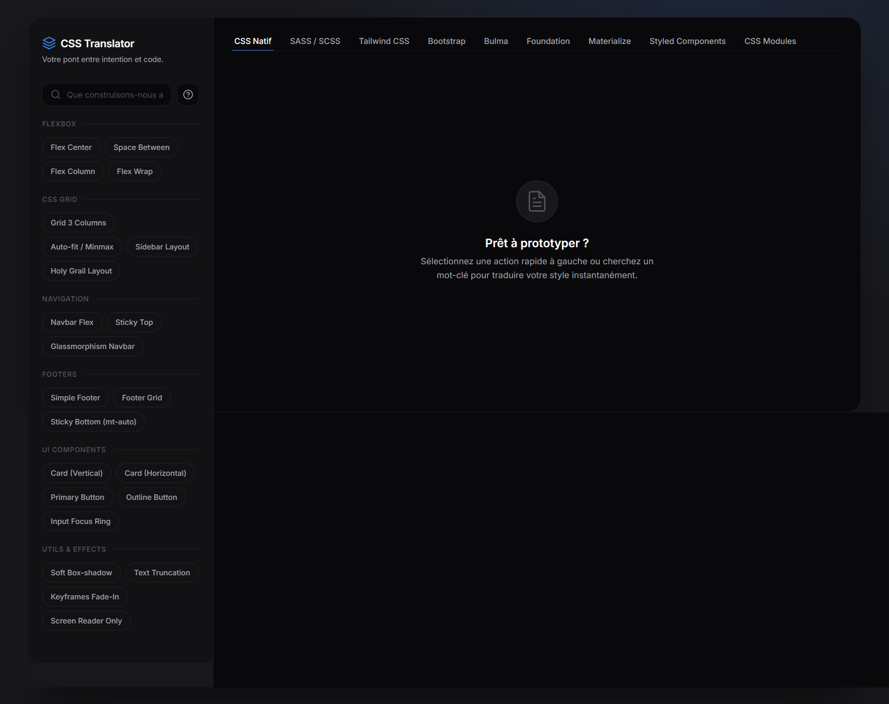

Etude de cas
CSS Translator

01 - Contexte
Problème
Les développeurs front-end et les designers qui codent jonglent quotidiennement entre plusieurs frameworks CSS Tailwind sur un projet, Bootstrap chez un client, SASS en legacy. À chaque changement de contexte, ils perdent un temps considérable à chercher dans la documentation la syntaxe équivalente d'un composant qu'ils maîtrisent déjà dans un autre framework.
La solution en place était la recherche directe dans les documentations officielles ou sur Stack Overflow. Le problème : elle oblige à quitter son éditeur, naviguer entre plusieurs onglets et reformuler sa recherche dans chaque doc. Résultat : une interruption de 4 à 8 minutes par question, plusieurs fois par jour, qui casse le flux de travail et ralentit la production.
Le changement de contexte coûte cher
Passer d'un framework à un autre impose de mémoriser des syntaxes radicalement différentes pour le même résultat visuel. Sans aide, chaque oubli coûte plusieurs minutes de recherche.
Les documentations ne se parlent pas
Aucun outil n'agrège les syntaxes de plusieurs frameworks en un seul endroit. Tailwind, Bootstrap et Bulma ont chacun leur doc distincte, sans équivalences entre elles.
Opportunité : la traduction instantanée
Si un développeur peut écrire ce qu'il veut faire en langage naturel et obtenir le snippet dans son framework cible en moins de 3 secondes, le flux de travail n'est plus interrompu.
Contrainte : zéro coût de fonctionnement
Le projet devait être 100% gratuit à déployer et maintenir. Toute la logique de correspondance a été construite en dur côté client sans API externe ni backend.
02 - Recherche
Persona
J'ai mené 5 entretiens informels de 20 à 30 minutes avec des étudiants en développement web et des développeurs juniors en alternance, recrutés dans mon réseau MDS et sur des serveurs Discord dédiés au front-end. Les sessions ont été conduites en visio, sans enregistrement, avec prise de notes en temps réel sur Notion. L'objectif : identifier les moments précis où le changement de framework crée une friction dans le travail quotidien.
Lucas, 22 ans
Étudiant Bachelor Dev Web alternant en agence
Frustrations
- Jongle entre Tailwind en cours et Bootstrap chez son employeur deux syntaxes à maintenir en parallèle
- Perd le fil de ce qu'il codait à chaque aller-retour vers la documentation
- Se sent "nul" quand il cherche la même chose pour la troisième fois
Besoins réels
- Un accès rapide aux équivalences sans quitter son éditeur
- Comprendre les différences entre frameworks, pas juste copier-coller
- Un outil qui accepte les recherches en français
Inès, 26 ans
Designer UI qui code freelance Webflow & React
Frustrations
- Maîtrise le CSS natif mais bloque dès qu'un client impose Tailwind ou Bootstrap
- Les documentations officielles sont trop verbeuses pour trouver vite une réponse simple
- N'arrive pas à mémoriser les classes utilitaires Tailwind entre deux projets
Besoins réels
- Décrire ce qu'elle veut faire avec ses mots, obtenir le code immédiatement
- Un point de référence unique pour comparer les approches entre frameworks
- Un outil léger, sans compte à créer, utilisable en 10 secondes
"Je connais Tailwind, je connais Bootstrap, mais à chaque fois que je switch je repars de zéro c'est épuisant de googler la même chose en boucle."
Lucas, participant n°2
03 - Analyse
User Journey Map
Le parcours de Lucas depuis le moment où il identifie un besoin CSS dans son code jusqu'à l'intégration réussie du bon snippet dans son projet en passant par la friction centrale de la recherche multi-docs.
| 1. Blocage code | 2. Recherche | 3. Navigation docs | 4. Adaptation | 5. Intégration | |
|---|---|---|---|---|---|
| Actions | Identifie qu'il doit centrer un élément en Bootstrap alors qu'il ne connaît que Tailwind | Ouvre un nouvel onglet, tape "center element Bootstrap" sur Google | Parcourt 2 à 3 résultats, compare des réponses Stack Overflow de 2019 et 2023 | Teste le code trouvé, constate que la version ne correspond pas à son projet | Trouve enfin la bonne syntaxe, l'intègre et reprend son travail |
| Pensées | "Je sais ce que je veux faire, juste pas comment l'écrire ici" | "Je vais trouver ça en 30 secondes" | "Ces réponses sont contradictoires, laquelle est la bonne ?" | "Pourquoi ça ne marche pas, j'ai copié exactement ce qu'il y avait" | "Enfin. J'ai perdu 10 minutes pour 2 lignes de code" |
| Emotions | Neutre | Positif | Frustré | Perdu | Soulagé |
| Frictions | - | - | ⚠ Résultats contradictoires, versions obsolètes mélangées aux récentes | ⚠ Code copié non adapté à la version du framework utilisée en projet | - |
Parcours de Lucas développeur web en alternance sur une tâche CSS de routine
04 - Architecture
User Flow
L'architecture repose sur un flux unique, linéaire et sans détour : l'utilisateur arrive sur une seule page, choisit son framework cible, tape ce qu'il cherche ou clique une action rapide, et obtient immédiatement le snippet. Pas de navigation, pas d'écran intermédiaire. Ce choix découle directement des entretiens : la friction venait précisément de la multiplicité des étapes pour atteindre un résultat simple.
La sidebar catégorisée répond à un besoin de découverte certains utilisateurs ne savent pas exactement comment formuler leur besoin. Les quick actions leur permettent de partir d'un exemple. La mini-doc, accessible via un onglet dédié, est volontairement séparée du flux principal pour ne pas alourdir l'expérience des utilisateurs qui savent déjà ce qu'ils cherchent.
05 - Solution
MVP
Ce que j'ai construit : Une application React à page unique composée d'une sidebar avec des catégories et des badgess cliquables, d'un sélecteur de framework en tabs, et d'une zone de résultat qui affiche instantanément le snippet correspondant. L'utilisateur peut aussi taper en langage naturel (français ou anglais) le moteur de correspondance par mots-clés retrouve le bon snippet sans serveur.
Choix techniques : J'ai choisi HTML, CSS et JavaScript vanilla sans framework, sans dépendances. Le HTML/CSS a été structuré avec l'aide de l'IA pour gagner du temps sur la mise en page et le design system. Le JavaScript moteur de recherche par mots-clés, gestion d'état, switch de framework instantané a été entièrement écrit par moi, puis optimisé avec l'IA une fois ma version terminée. J'ai écarté toute API externe pour garder l'outil 100% gratuit et déployable sans backend.
Ce qui n'est PAS dans le MVP : La génération de snippets à la demande via IA (écarté pour zéro coût), un système de favoris, et la comparaison côte à côte de plusieurs frameworks simultanément. Ces fonctionnalités sont prévues en v2.
Stack technique
HTML5, CSS3, JavaScript vanilla aucun framework, aucune dépendance. Déploiement statique sur hébergement mutualisé. Design réalisé dans Figma. Snippets hardcodés dans un fichier JS dédié.
Décision de priorisation
Couvrir 12 cas d'usage CSS en profondeur plutôt que 50 superficiellement. Qualité des snippets avant quantité chaque snippet vérifié manuellement dans les 9 frameworks.
Contrainte technique majeure
Moteur de recherche sans serveur. Résolu avec une liste de synonymes par snippet (mots-clés fr et en) une correspondance partielle suffit à retrouver le bon résultat.
06 - Tests
Ce que les gens ont dit
J'ai testé le prototype avec 4 participants recrutés dans mon réseau (2 étudiants, 1 développeur junior en poste, 1 designer qui code). Chaque session durait environ 5 minutes en visio 50 minutes de tâches libres sur l'outil, 5 minutes de questions ouvertes. Aucun script imposé : je voulais observer comment ils exploraient naturellement l'interface.
"J'ai tapé 'centrer' et ça m'a sorti exactement ce que je cherchais en Tailwind. C'est bête mais c'est ce dont j'ai besoin tous les jours."
"Je savais pas trop comment chercher au début, j'ai cliqué sur les badgess et là j'ai compris le principe. Peut-être mettre un exemple dans le placeholder de la recherche ?"
"Le fait de pouvoir switcher de framework sans re-taper la recherche, c'est vraiment malin. On voit d'un coup à quel point les syntaxes sont différentes."
"J'aurais aimé pouvoir copier le snippet directement depuis la sidebar sans avoir à cliquer sur le badges d'abord. Une étape de trop."
Ce que j'ai changé.
Le placeholder de la recherche n'orientait pas assez
3 participants sur 4 ont hésité avant de taper leur première recherche. J'ai remplacé le placeholder générique par un exemple concret : "ex: bouton primaire, modal, grid 3 colonnes..." ce qui a réduit le temps avant la première action.
Le badges actif n'était pas assez visible dans la sidebar
Après avoir cliqué un badges, les participants ne savaient plus quel snippet était affiché. J'ai ajouté une mise en évidence couleur avec la teinte du framework actif sur le badges sélectionné, créant un lien visuel clair entre la sidebar et la zone de résultat.
Ajout du lien vers la mini-doc depuis la zone de résultat vide
Quand une recherche ne retournait rien, l'utilisateur était bloqué sans piste. J'ai ajouté dans l'état vide un lien direct vers la mini-doc suggestion venue du participant n°2 et intégrée telle quelle.
07 - Bilan
Ce que ça a produit
100%
des participants ont trouvé le snippet recherché sans aide extérieure lors du test
4,1/5
Score de satisfaction moyen sur la facilité d'utilisation perçue
< 8s
Temps moyen pour obtenir un snippet après l'arrivée sur l'outil
Ce que j'ai appris.
J'ai appris que la valeur d'un outil développeur ne tient pas à sa complexité technique elle tient à la précision avec laquelle il réduit une friction précise. Je pensais que les utilisateurs voudraient une génération de snippets via une IA, mais les tests ont montré qu'ils préféraient des réponses instantanées et fiables à des réponses "intelligentes" mais lentes ou incertaines.
Ce que je ferais différemment : Je partirais plus vite sur un prototype cliquable avant de coder. J'ai perdu du temps à construire des fonctionnalités que les tests ont remises en question. Une maquette Figma testée en amont aurait changé des décisions d'architecture importantes.
La suite.
La v2 prévoit d'étendre la bibliothèque à 40 snippets, d'ajouter une vue comparaison côte à côte entre deux frameworks, et d'intégrer un système de favoris. À plus long terme, une version CLI est envisagée pour utiliser CSS Translator directement depuis le terminal sans quitter son éditeur.